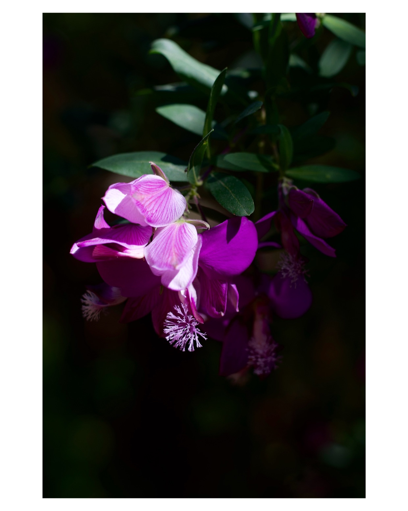

How to add borders to photos without losing HDR or EXIF data
Keep bright highlights, retain camera details, and check the photo you actually save.
Quick answer: Open a supported HDR photo in Simple Border on iPhone or Mac, choose your border, and leave HDR enabled when saving. If you prefer photos without HDR, you can turn it off by enabling Always save as SDR in Settings. To retain EXIF camera details, start with the original photo and check the saved result. HDR and EXIF are separate properties: verify both before sharing.
Simple Border introduced HDR photo and video exports on iOS and macOS in version 8.7.0. The workflow below uses those controls; the photo example later on records a separate metadata and resolution test.

Add the border and keep the details you need
- Start with the original photo. Choose a source that already contains the HDR information and camera details you want to keep. In Photos, open the original and swipe up or tap Info to check its camera information and location.
- Choose the frame. Open the photo in Simple Border. Choose Original for a frame around the existing shape, or select a target ratio such as square or 4:5. Set the border color and width.
- Keep HDR enabled. For a supported HDR photo, leave HDR enabled in the editor. If you prefer photos without HDR, you can turn it off by enabling Always save as SDR in Settings or tapping the HDR pill in the editor.
- Save and check the export. Save the bordered photo and compare it with the original. Inspect camera details and location in Photos, then compare highlights in an HDR-capable viewer on the same display. Check the file received by the destination app as well.
On Mac, the same HDR/SDR choice applies. Use Photos' Info window to compare the source and saved photo. For a fuller introduction to choosing ratios and colors, see the iPhone border guide.
HDR, EXIF, and resolution mean different things
- HDR: how highlights are displayed
- High dynamic range can show bright skies, reflections, and lights beyond the normal SDR range on a compatible display. HDR image data and a viewer that supports it both matter. Some photos carry an SDR image plus additional HDR gain-map information.
- EXIF: information about the photograph
- Camera model, lens, exposure settings, and capture time describe how the photo was made. GPS fields can record where it was taken. Keeping these fields does not establish that the image is still HDR.
- Resolution: the pixel dimensions
- A border adds canvas around the photo, so the finished file can have larger dimensions. Keeping pixel dimensions is separate from keeping HDR or metadata, and does not prove that a newly encoded file is lossless.
For the underlying HDR format behavior, see Apple's HDR image overview.
A real photo export: dimensions and metadata
In our August 2026 comparison, we used a 2422 × 3633 image from a Sony ZV-E10 RAW workflow and requested a 4:5 frame with a 5% white border. The recorded Simple Border export kept camera metadata and location.

- Source image
- 2422 × 3633 pixels
- Framed export
- 3059 × 3824 pixels
- Recorded file size
- 1.1 MB
- Camera metadata
- Kept
- Location
- Kept
- HDR
- Not measured in this test
Download the recorded measurements (CSV), or read the six-app comparison and test method.
This is one input and one recorded export. The published test did not record app build numbers, the device model, or the OS version. Use your own source photo to verify the result for your workflow.
Keep your original RAW or camera file as well as the bordered copy. A framed image is a new export; its larger canvas does not replace the original capture.
Check the saved photo before sending it
Check camera details and location
On iPhone, open the original in Photos and swipe up or tap Info. Note the camera, lens, capture time, and location that are available. Open the saved bordered photo and compare the same fields. On Mac, select the photo in Photos and click Info.
Only expect fields that are present in the source. A photo without GPS data cannot retain a recorded location that was never there. A caption or a manually edited library date is also different from embedded camera metadata.
Check HDR on the same display
Compare the original and export in an HDR-capable viewer on the same display, with the same viewing conditions. If the bordered copy looks flat, first check the HDR choice in Simple Border and the Always save as SDR setting. Then check whether the viewing app supports HDR. Visual comparison is a useful first check, not a file-format certification.
Check the file after sharing
Inspect the copy received through your intended sharing route, not just the copy in Photos. The receiving app or service may convert the image or remove metadata. For a consistent SDR version, choose SDR explicitly in Simple Border and check that saved version before posting.
If you prefer to omit location, Photos' share options let you turn off Location for sharing. Keeping camera settings and choosing whether to share GPS information are separate decisions.
Frequently asked questions
Does adding a border remove EXIF data?
It depends on the app and export workflow. In our August 2026 single-photo test, Simple Border kept camera metadata and location. Start with a file that contains the details you need, then check the saved export.
Does a HEIC or JPEG filename prove HDR is preserved?
No. HEIF and JPEG can carry HDR gain-map data, but the file extension alone does not confirm that it survived an edit. Check the source and saved export in an HDR-capable viewer.
Why does my bordered photo look less bright?
Check that the source is HDR, HDR is enabled in Simple Border, and Always save as SDR is off. Compare the original and export on the same display in the same viewing app. A receiving app may show an SDR rendition.
Does this HDR workflow apply to Android?
The HDR controls described here are available on iOS and macOS. Android has a separate feature set; check the Android changelog for its current features.
Sources and related guides
- Simple Border 8.7.0 release notes: HDR export controls on iOS and macOS.
- Our photo export comparison: the recorded metadata and resolution example.
- Apple: see photo and video information on iPhone.
- Apple: manage location metadata in Photos.
- Apple: HDR image behavior and gain maps.
For a particular look, follow the black-border guide. For a social post, choose a canvas with the Instagram format guide.
Keep the whole photo, then check the export
Choose a border, keep HDR enabled for supported media, and save a copy with Simple Border on iPhone, iPad, or Apple-silicon Mac.